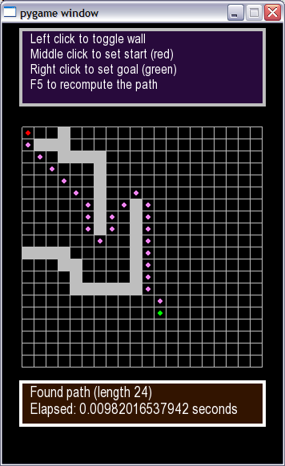
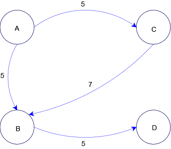
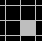
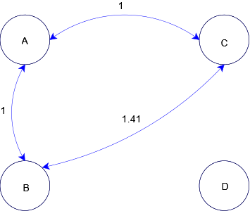
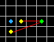

This is part III of the "Writing a game in Python with Pygame" tutorial.
A digression
This part will be a digression from the first two, in the sense that it won't deal with the "Creeps" simulation we've been developing so far. Rather, we'll explore pathfinding - an important "artificial intelligence" technique for games. Pathfinding will be crucial for the future development of our game, so I'm spending a whole part on it.
I'll start by presenting my implementation of the A* pathfinding algoritm. The implementation is generic, and has nothing to do with our game. I assume a basic acquaintance with computer-science algorithms and data structures here, so depending on your background you may find it a bit dense. Don't worry, you can skip it entirely without any real loss - you'll be able to understand the rest of the tutorial.
Next, I'll show a useful Pygame-based demo of the algorithm at work - this is recommended even if you don't want to dive into the implementation of the algorithm, as it ties the algorithm with our game.
Here's a teaser screenshot:
The code
The code for this part can be downloaded from here. It contains the implementation of the pathfinding algorithm and the demo Pygame application.
Pathfinding
Pathfinding is one of the most important aspects of game AI (Artificial Intelligence). I'll quote Wikipedia:
Pathfinding in this context concerns the way in which a moving entity finds a path around an obstacle; the most frequent context is real time strategy games (in which the player directs units around a play area containing obstacles), but may also be first person shooters. Pathfinding has grown in importance as games and their environments have become more complex.
Consider a game character controlled by the computer (AI) that wants to get from one place to another. Assuming it can't just instantly teleport itself to the destination, how does it know which way to go ?
Pathfinding is the answer. And the most popular and well-known algorithm for pathfinding is called A* (A-star). This is the algorithm I'm going to implement in Python and integrate into a Pygame demo in this part.
A*
I have no intention of teaching A* in this tutorial. Others have done it already, and there are wonderful introductions, full of nice diagrams, online. Two I recommend highly are (in this order): Patrick Lester's A* Pathfinding for Beginners and Amit's A* Pages. Patrick's article is sufficient for you to understand the algorithm and the rest of my tutorial. Amit's is a great resource if you want to learn more about the algorithm. I'm sure there are many other articles online - just Google the subject.
...time passes as you engorge yourself with A* knowledge...
Oh, so you know how A* works now! That's really cool, so let's proceed with the tutorial. I'll just post a short reminder, for those who've learned about A* before and can't be bothered to read a full tutorial: A* is a greedy best-first search algorithm. From the start node, it starts considering nodes that could lead it to the goal, judging them by relative merit - the cost to get to them plus an estimated cost to get to the goal from them (more on this heuristic estimation later). All the nodes that are still to be considered are kept in an open list, and all the nodes with which the algorithm is done (i.e. explored all their successors) are kept in a closed list. At each "step" the cheapest node from the open list is considered as the next one, and all its successors are added to the open list (where they're sorted by cost), unless they're already there. If a node is already in an open list but now a cheaper path was found to reach it, its cost in the open list is updated. This goes on until the algorithm runs into the goal node, at which point it declares success and returns the path. That's about it, in short. If you've just finished the A* tutorial, or are familiar with A* from before, the previous paragraph should sound very familiar. If you still don't understand it and want to understand my implementation, I recommend you to read the tutorial again.
PathFinder
In the code for this part you'll find the file pathfinder.py with the class PathFinder. This is the class implementing path finding in Python. The class is well documented and if you understand how A* works you should have no trouble with it. There are just two points I want to clarify before we get into the code.
Representing graphs and costs
PathFinder is a generic class that doesn't care how you represent your graph, and how you represent and compute the costs of moving from place to place. It lets you specify this information by passing functions into its constructor (this is a good time to have the code of PathFinder open in an editor).
To understand the terminology, consider this graph:
A graph consists of nodes [1] (the circles) and edges (the arrows). For our pathfinding needs, we're interested in finding out paths from one node to another, through several edges and intermediary nodes. The costs associated with the movement will be marked as numbers on the edges. For instance, we can move in one step from node C to node B, and it will cost us 7 [2]. We can further move from B to D for a cost of 5, so the total cost for movement from C to D bia B is 12.
So how does PathFinder know how your graph looks? Very simple, you just specify it with the successors function passed in as an argument. The successors of a node are all the nodes that can be reached from this node in a single step. For example, in the graph above, the successors of A are C and B, the successor of B is D, and D has no successors.
PathFinder also knows about the costs because you provide it with the move_cost function, that tells it the cost between each two nodes.
The third function passed to PathFinder is heuristic_to_goal. You should be familiar with it from the A* articles, and I'll have more to say about it later.
Implementing the open set
You'll recall that the A* algorithm uses the open set to keep track of the nodes it still has to visit. The open set is perhaps the most important data structure for A*, and implementing it correctly is non-trivial.
I was surprised to find out that most of the implementations of the open set online are very inefficient. I also began with an inefficient implementation, but then A* just took too long to run on even simple graphs! Optimizing the open set with the correct data structure speeded things up by about 100! To read about the various considerations of the implementation, Amit's Implementation notes is a terrific resource.
My implementation uses the PriorityQueueSet class defined in the file priorityqueueset.py. It is a marriage of a priority queue with a set, which is required, because the open set must be both sorted by priority and the nodes in it must be unique.
The data structure is very efficient except for one operation. This operation is updating a node in the queue to a lower priority. Luckily, it doesn't happen often in realistic pathfinding problems, so overall it doesn't hinder the performance too much.
The implementation of A*
Finally, you're ready to tackle compute_path, the method of PathFinder that implements A*. You'll quickly see how closely it follows the various pseudocodes for A* you find in articles. Python is very pseudocode-like, it's one of its greatest powers!
One important thing you should keep in mind while reading the code of PathFinder is its usage of the helper _Node class. This node holds the point in your graph and its associated costs that help A* do its work. Read its documentation string for more information.
GridMap
For pathfinding in our game we're interested in a very special type of graph - a rectangular grid. Such a grid graph is implemented in gridmap.py. The idea is as follows:
The grid is rectangular, and you can get from any square to any neighbor square (up, down, left, right and diagonally), unless that square is blocked [3].
Consider the 4 full squares (one of them blocked) on the following image:
GridMap will represent this map using the following graph:
Several things to note here:
- The arrows are bi-directional, meaning that a path exists between two nodes both ways (which usually makes sense in game maps).
- Node D is unreachable - it represents the blocked square in the map.
- The costs for moving between nodes is the Euclidean distance between them.
Now, if you run the file pathfinder.py - you'll see a small ASCII demo of PathFinder in action on a map created using GridMap. You can play with the settings and see how PathFinder responds.
The distance-to-goal heurustic
As promised, I'll mention the distance-to-goal heuristic which is required for the correct usage of the A* algorithm. In rectangular grids, the heuristic is easy to compute - it is simply the distance between the point and the goal.
Here's an example:
Suppose the algorithm has currently reached the blue node and the goal is green. The two yellow nodes are being considered as candidates for the next step. Both are distance 1 from the blue node, but which one should be picked?
The distance-to-goal heuristic states that the node closer to the goal should be picked, because it has more chance of leading to the goal quickly. The distance can be estimated as the "line-of-sight Euclidean distance", so the node to the right of the blue node will be picked next (but see exercise 1).
The pathfinder visualizer demo
The file pathfinder_visualize.py (in the example_code directory) contains a simple visualization of the pathfinding algorithm using Pygame. Just run it and read the directions at the top. You can mark goals and starting points, set and unset obstacles, and then ask it to compute a path by pressing F5.
There's nothing new in terms of Pygame in this demo - if you've followed the tutorial so far, you should have no trouble understanding its code. Note especially how it uses PathFinder and MapGrid to compute and display paths.
Demos like this are very helpful for analyzing and playing around with code and algorithms. Luckily we know Pygame now, so they're quite simple to implement .
Conclusion
In this part we went on a short side-walk from our Creeps game, to implement a pathfinding algorithm that we can later incorporate into the game.
The algorithm itself is A*, and while you're encouraged to understand how it works using the articles I've pointed to and my code, it's not a must. You'll be able to continue learning how to build the game even by treating it as a black box. Keep in mind, though, that if you're serious about game programming, you will be eventually forced to understand A* and pathfinding, as it's a very vital component of almost any game's AI.
In the next part we'll get back to our Creeps, making them a bit more intelligent using the algorithm we've covered here.

Exercises
- The distance-to-goal heuristic makes most sense for such maps. However, sometimes it misleads the algorithm to attempt a longer way. Can you think of such situations? Hint: what if there's a long obstacle on the line-of-sight path between the nodes? Simulate this using the visualizer demo.
- Try to give the visualizer an impossible problem, by surrounding the goal with walls, for example. How does it behave?
- Can you make up a map that takes the pathfinder a long time to find a path in? What's the longest time you've managed to make it run?
- Try to change the implementation of PriorityQueueSet to use simpler data structures. For example, use a simple sorted array. Time the pathfinder algorithm now - how long does it take to solve problems on 20x20 grids?
- Can you cause the PathFinder almost never find paths that include diagonal movement, but still find them when they're the only option to reach a goal? Hint: use the movement cost function to help it decide.
| [1] | Also called vertices in graph terminology. |
| [2] | 7 what, apples? It depends on what you use the graph for. For our pathfinding needs, the cost can represent the time it takes the character to move from one node to another. |
| [3] | This represents an obstacle. |